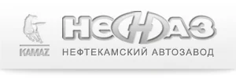
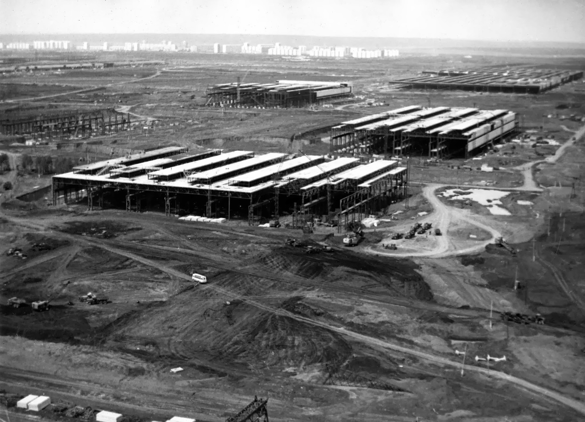
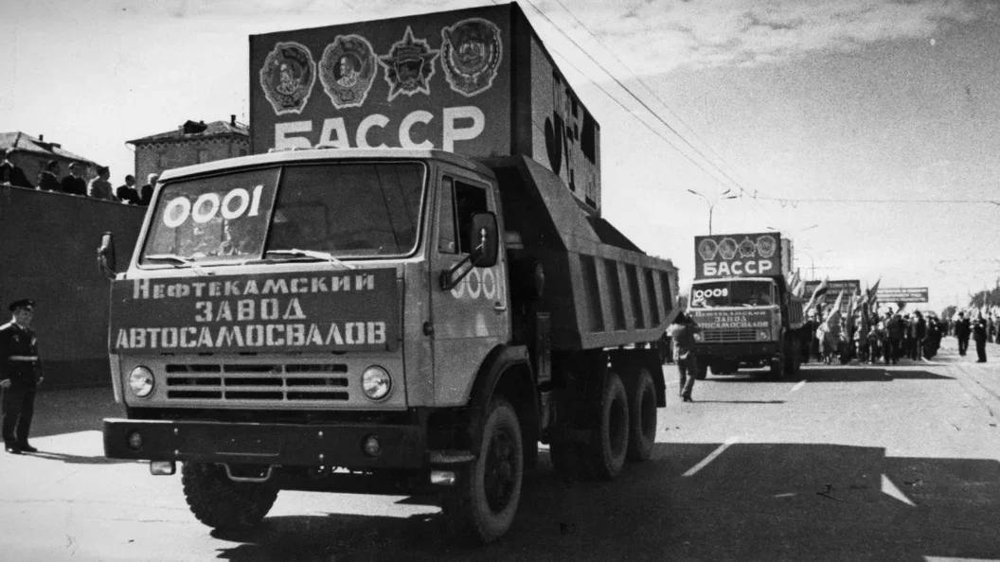
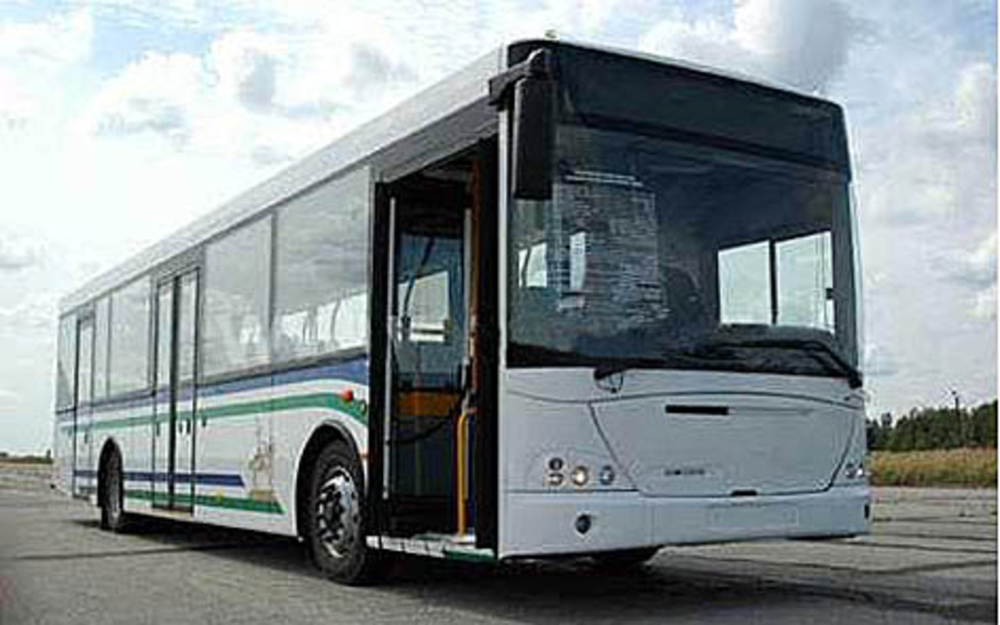
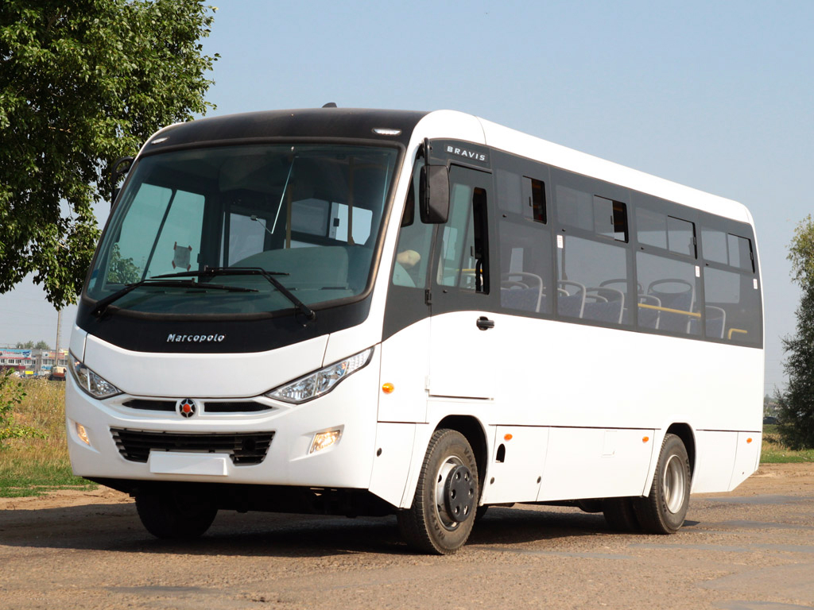
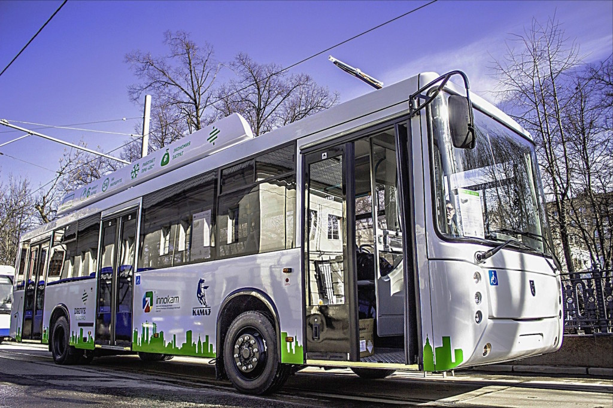
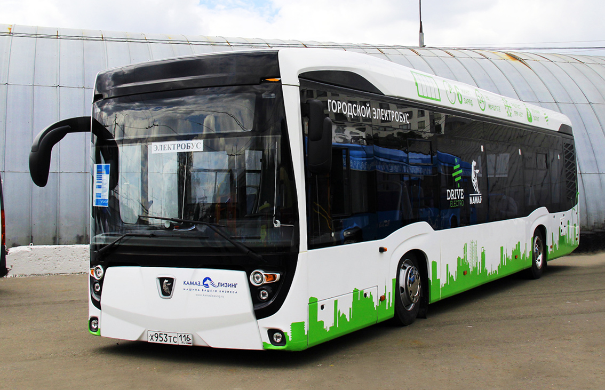
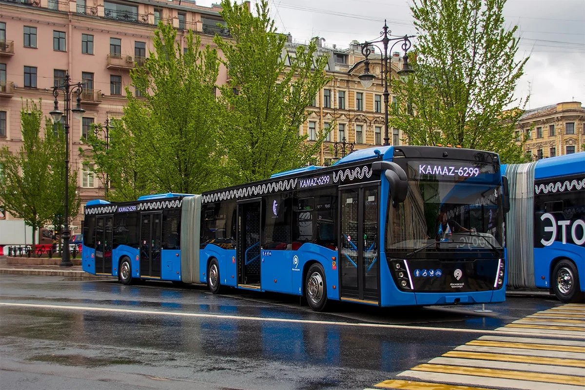

О ПАО «НЕФАЗ»
Это автомобилестроительная компания, входящая в группу предприятий «КАМАЗ» и являющаяся крупнейшим российским производителем спецнадстроек на шасси автомобиля КАМАЗ. В декабре 2000 года заводом был представлен первый автобус городского типа «НЕФАЗ-5299». Расположен завод в городе Нефтекамск.

История «НЕФАЗ»
17 декабря 1970 года Совет министров СССР издал постановление «О строительстве и реконструкции заводов Министерства автомобильной промышленности для обеспечения Камского автомобильного завода запасными частями и комплектующими деталями». В те годы шло строительство КАМАЗа, и было решено строить и заводы-спутники, которые бы поставляли туда необходимую комплектацию.

25 декабря 1970 года Государственный комитет Совета министров по делам строительства издал приказ № 65 «О создании завода по производству автосамосвалов и лебёдок» в городе Нефтекамске Башкирской АССР. Подобный же приказ № 4 от 8 января 1971 года издал Министр автомобильной промышленности СССР.
13 июля 1972 года началось строительство завода.
15 апреля 1977 собран первый десятитонный автосамосвал «КАМАЗ-5511». 
11 октября 1977 года состоялся пуск главного конвейера. Начался серийный выпуск автосамосвалов «КАМАЗ-5511».
31 октября 1977 года был утверждён акт Государственной комиссии о приёмке в эксплуатацию первой очереди Нефтекамского завода по производству автосамосвалов.
В 1981 году сдана в эксплуатацию первая очередь производства вахтовых автобусов. Мощность производства — 3000 вахтовых автобусов в год.
19 мая 1982 года выпущен 100-тысячный самосвал «КАМАЗ-5511».
В 1993 году завод стал Открытым акционерным обществом «Нефтекамский автозавод».
В 1993 году завод стал Открытым акционерным обществом «Нефтекамский автозавод».
В 1993 году завод стал Открытым акционерным обществом «Нефтекамский автозавод».
В середине 2006 года заводом заинтересовался голландско-бельгийский концерн VDL, и с начала января 2007 года они совместно с НЕФАЗом начали производство новых пассажирских автобусов. 
В конце 2012 года совместное предприятие КАМАЗа и бразильской Marcopolo S.A. «КАМАЗ-Марко», расположенное на территории завода НЕФАЗ приступило к сборке автобусов малого класса Bravis. Автобус разработан на шасси «КАМАЗа» и имеет 25 мест. 
28 августа 2012 года сертифицирован электрический автобус (электробус) НЕФАЗ-52992. Автономный электрический ход рассчитан более чем на 200 км. 
В 2016 году Открытое акционерное общество «НЕФАЗ» переименовано в Публичное акционерное общество «НЕФАЗ».
В августе 2018 года выпущен электробус КамАЗ-6282, совместная разработка НЕФАЗа и КАМАЗа. 
в 2020—2021 году выпущен сочленённый автобус КАМАЗ-6299-40-52. 